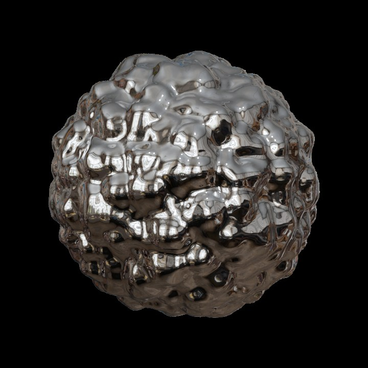

Controls
Every material
100% proceduralBlender 5.2+
Chrome Type Kit 2 · 107 styles, brushes and effects · 55 materials
Your vectors deserve more than an extrude.
Chrome Type Kit 2 turns flat artwork into rich 3D objects in one click. Import an SVG from Illustrator, drop in a PNG with transparency, paint with Grease Pencil, or select any mesh – pick a style, press Apply, done.



Four modes, one workflow: pick the mode, choose the source, pick a style, create. Every result is a live Geometry Nodes modifier, nothing is ever destructive.
Import an SVG from Illustrator. Illustrator CSS styles are fixed automatically, open paths stay open, holes stay holes.
Image with alpha: logos, lettering, tattoo flash. The contour is traced live.
Paint with Grease Pencil. Every style becomes a brush layer, pen pressure controls thickness. The brushes are in the Draw Brushes category below.
Select any mesh, pick a Mesh Workshop style, press Apply. Works on a 5 cm ring or a 50 m statue alike.
Click a category, then a style. Arrow keys and swipe work too.
107 hand-tuned styles, each with a rendered thumbnail and search. The gallery only shows styles that work in the current mode.
| Category | Count | Styles |
|---|---|---|
| Draw Brushes | 23 | Chrome Ultra Fine, Chrome Fine, Chrome Medium, Chrome Bold, Chrome Heavy, Gold Line, Chrome Drip, Chrome Drops, Liquid Chrome, Organic Big Bubbles, Soft Bubbles, Chrome Bubbles, Tribal Blade, Tribal Obsidian, Chain, Pearl String, Chrome Caviar, Twisted Rope, Thorn Vine, Holo Ribbon, Neon Tube, Voronoi Tube, Nearest Point Net |
| Mesh Workshop | 9 | Mesh Voronoi Chrome, Mesh Voronoi Gold Fine, Mesh Voronoi Organic, Mesh Stone Grooves, Mesh Liquid Chrome, Mesh Melted Voronoi, Mesh Organic, Mesh Spheres, Mesh Spheres Chrome |
| Mesh Surface | 9 | Surface Detail, Surface Detail Stone, Lumpy Blob, Blob Art, Blob Art Chrome, Cloud, Damaged Stone, Heavy Damage, Liquid Chrome Coat |
| Mesh Art | 9 | Slices, Glitch Slices, Pixel Voxels, Pixel Voxels Fine, Triangle Art, Triangle Art Gold, Nearest Point Net, Voronoi Spikes, Flow Lines |
| Organic | 8 | Organic Tubes, Organic Fine, Organic Extra Fine, Organic Big Bubbles, Soft Bubbles, Liquid Chrome, Chrome Bubbles, Coral |
| Tribal & Inflate | 6 | Tribal Chrome, Round Pillow, Slanted Chrome, Stone Horns, Obsidian Tribal, Jade Rounded |
| Voronoi & Nets | 5 | Voronoi Chrome, Gold Foam, Bone Voronoi, Nearest Net, Bone Net |
| Rocks | 5 | Rock Chain, Rock Fine, Rock Shards, Rock Voronoi, Lava Rock |
| FX | 11 | Thorns Chrome, Thorns Obsidian, Melt Chrome, Melt Gold, Branches Gold, Swirl Oil-Slick, Glitch Neon, Ice Crystals, Soap Bubbles, Bubble Explosion, Ultra Mix |
| Clusters | 9 | Bubble Cluster, Rock Cluster, Organic Cluster, Nearest Cluster, Voronoi Cluster, Urchins, Chain, Cluster Grid, MAXIMUM POWA |
| Sphere Lines | 8 | Sphere Outline, Sphere Topo, Sphere Organic, Sphere Bubbles Chrome, Pearl Strings, Sphere Cross Hatch, Sphere Coral, Caviar |
| Line Art | 5 | Topo Lines, Topo Relief, Cross Hatch, Wave Lines, Engraving Plate |
| Styles total | 107 | |
| Materials | 55 | Selectable in the category bar above |
Carefully curated HDRIs designed exclusively for lighting and reflection setups. Not all HDRIs are seamless, and they are not intended for background use.
No. Sources are only hidden, results are live modifiers.
Yes, everything you create is yours.
Use Draft quality while tweaking, or raise Detail (Voxel Size).
The voxel size is too small for that shape – raise Detail (Voxel Size).
Yes, every result is a regular Geometry Nodes modifier.